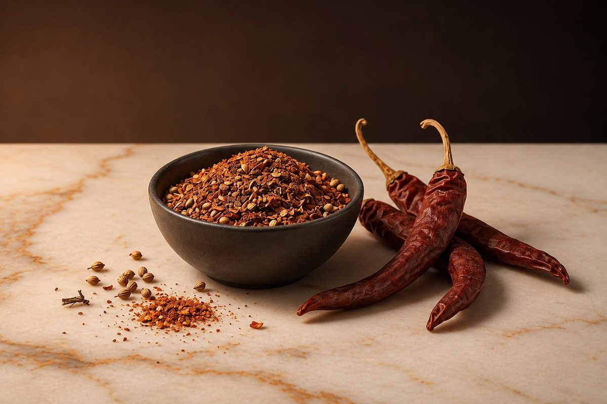
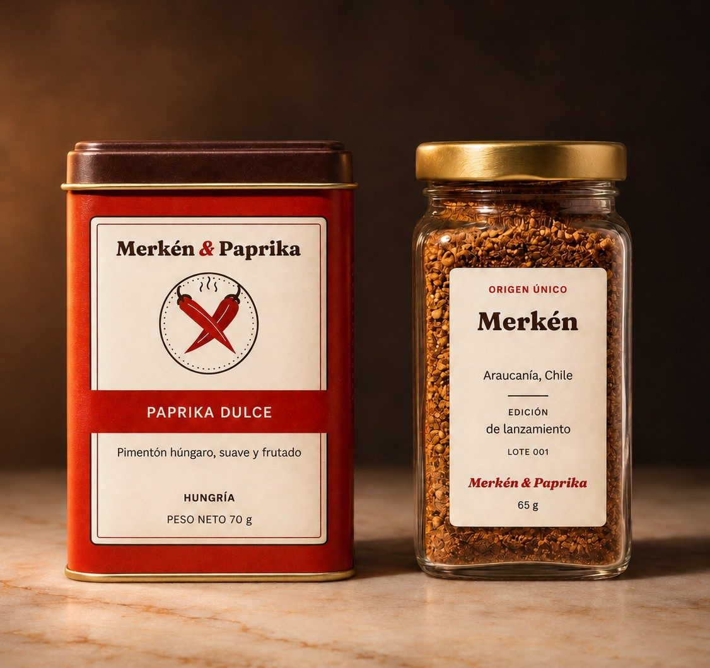
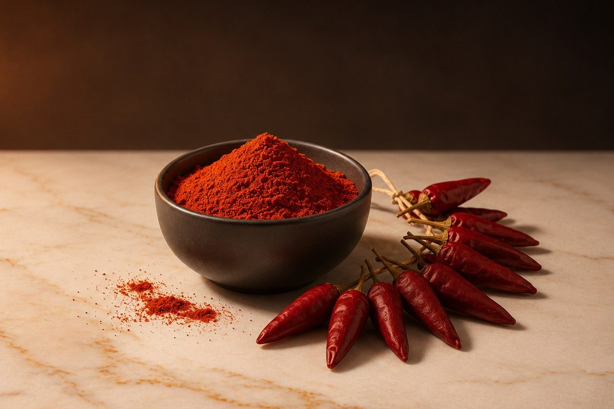
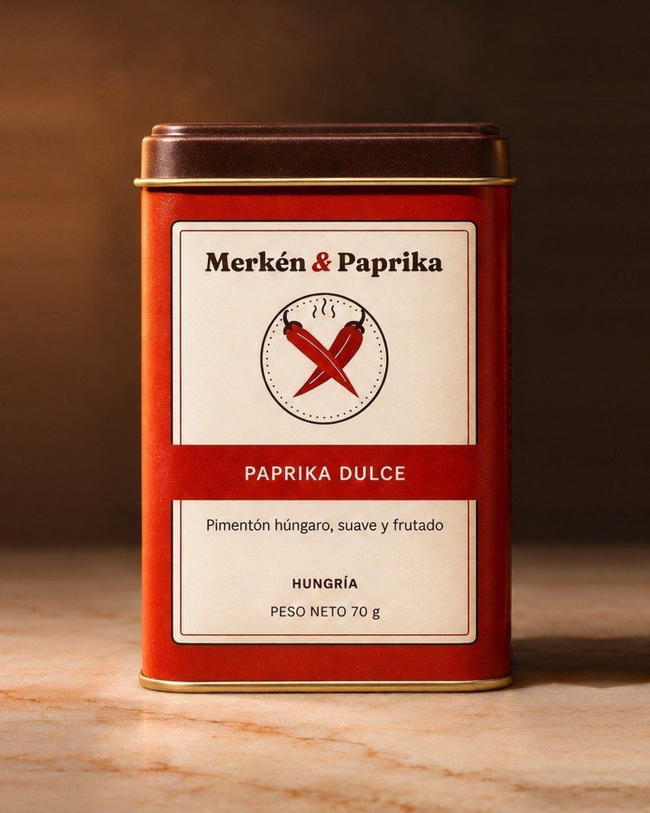
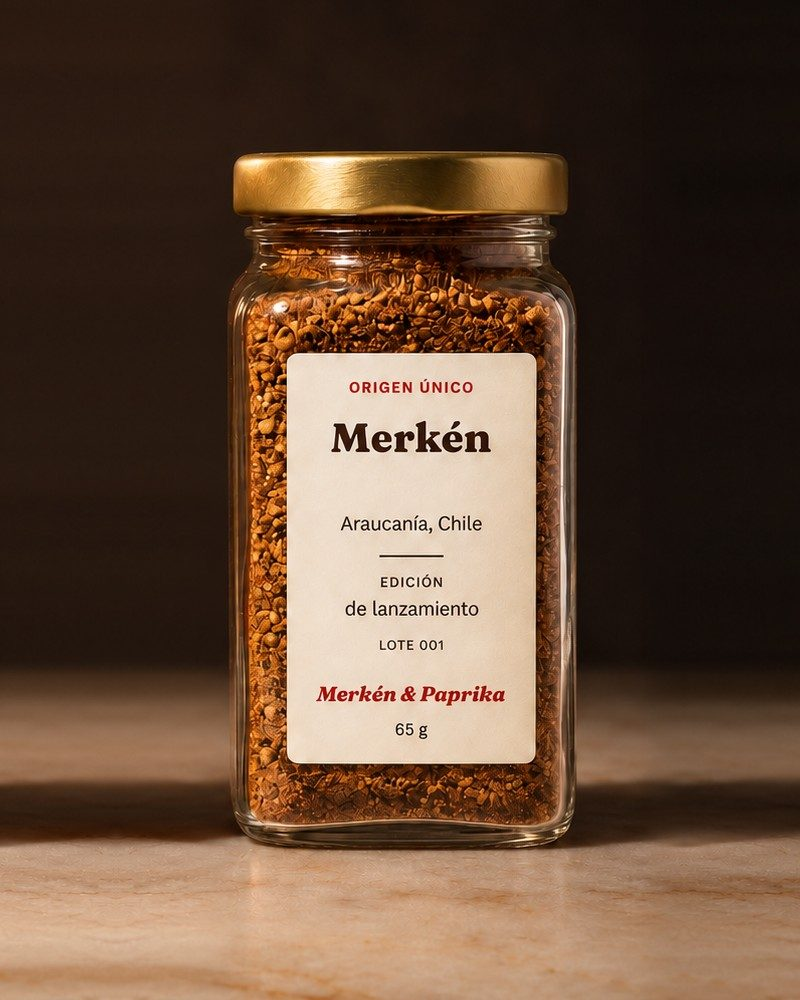
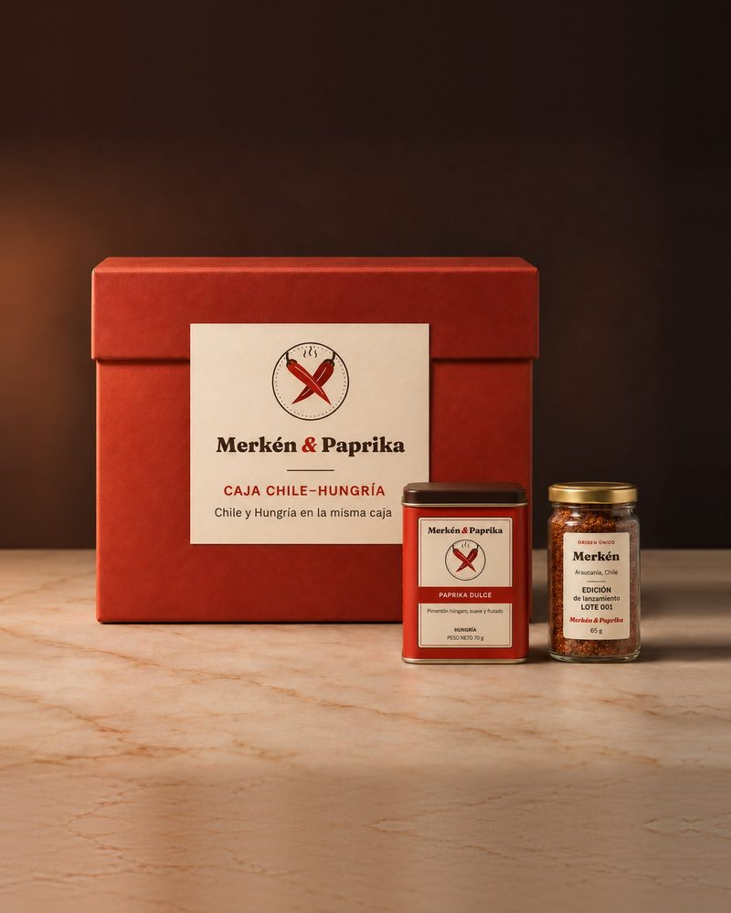

Chile · La Araucanía
Merkén
Ají cacho de cabra secado y ahumado a leña, molido con semilla de cilantro y sal. Un condimento de origen mapuche: ahumado, tibio, con picor amable.
Va con legumbres, papas, huevos y carnes a la parrilla.
Merkén ahumado del sur de Chile y paprika de la llanura húngara, envasados en Buenos Aires.
La primera tanda es chica. Anotate y comprá antes de que abra la tienda.

En julio de 1949 mi abuelo Ferenc, húngaro de 34 años, zarpó de Nápoles en el Mercy, un barco de refugiados de la posguerra, y desembarcó en Valparaíso. Sus hermanas se quedaron en Budapest, y hoy sigo en contacto con esa parte de la familia. Yo nací en Santiago y vivo en Buenos Aires. El merkén es el sabor de mi país; la paprika, el de mis raíces. Esta marca los junta.
Los separan más de 12.000 kilómetros. Los une la misma costumbre: secar el ají, molerlo y ponerlo en casi todo.

Ají cacho de cabra secado y ahumado a leña, molido con semilla de cilantro y sal. Un condimento de origen mapuche: ahumado, tibio, con picor amable.

Pimiento rojo secado y molido fino, del dulce al picante. Es la base del gulash y del pollo a la paprika: color profundo, sabor frutado.
Así van a llegar a tu cocina.



Dejá tu email y te avisamos antes que al resto.